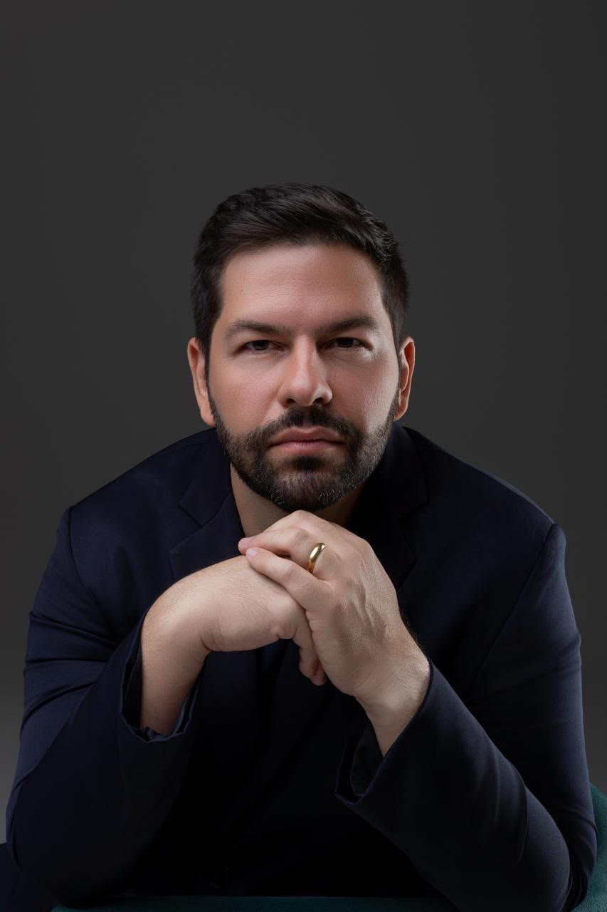
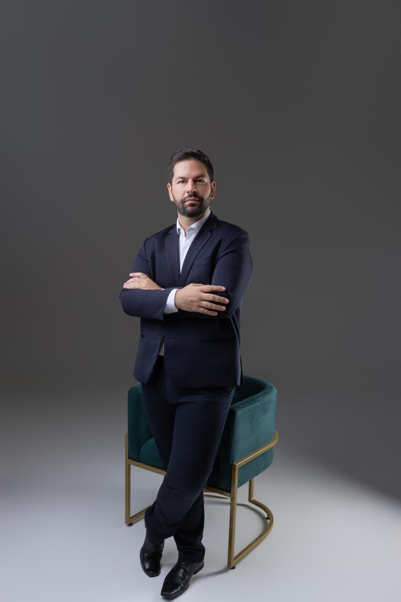

Acompanhamento médico individualizado com foco em prevenção cardiovascular, saúde metabólica, emagrecimento e mudança do estilo de vida — cuidado pensado para a sua rotina real.
CRM-MS 9851 · RQE 8183

Sou Dr. Victor Buratto, Médico de Família e Comunidade, Docente da UFMS e pós-graduado em Cardiologia Clínica e Endocrinologia Clínica.
Meu trabalho é ajudá-lo a compreender sua saúde de maneira completa e construir um plano individualizado para viver com mais saúde, autonomia e qualidade de vida.
Compromisso constante com a atualização científica e formação médica.
Especialização em Cardiologia Clínica e Endocrinologia Clínica.
Cuidado médico individualizado e voltado para a longevidade

Acompanhamento metabólico focado na perda de peso saudável e manutenção a longo prazo.
Controle e monitoramento contínuo para manter a pressão sob controle e proteger vasos e órgãos.
Estratégias para equilíbrio glicêmico, hábitos e prevenção de complicações metabólicas.
Avaliação detalhada dos lipídios para proteger a saúde do seu coração.
Identificação precoce de fatores de risco para garantir longevidade com qualidade.
Adequação dos pilares fundamentais da rotina para mais energia e disposição no dia a dia.
Avaliamos seis pilares fundamentais para construir metas que façam sentido para sua rotina:
Aqui, a consulta não é centrada apenas em exames ou diagnósticos.
Consideramos sua história, rotina, família, trabalho, dificuldades e objetivos para construir um cuidado individualizado, baseado em evidências e acompanhado ao longo do tempo.
Não espere adoecer para começar a cuidar da sua saúde. Vamos construir juntos um plano para a saúde que você deseja ter nos próximos anos.
📍 Endereço: Av. Capitão Olinto Mancini, 205 — Centro — Três Lagoas/MS